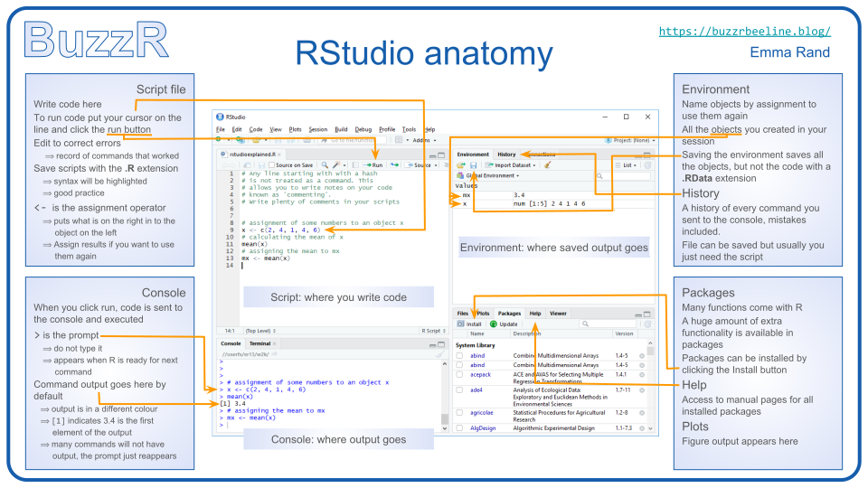
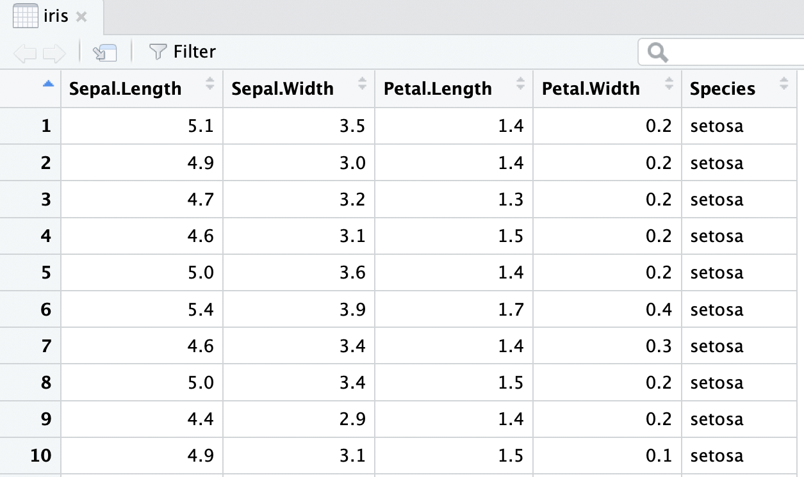
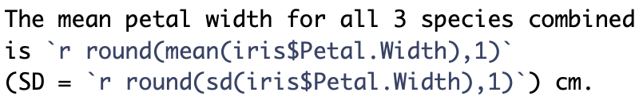

R03: R Basics, part 2
Last time
- Downloaded R and Rstudio
- If you are still having issues downloading, please come to my office hours!
- Became familiar with the console and a script file
- Did some math calculations in R!
Today, we’re going to work on…
- Assigning things in R
- Using functions to calculate
- Familiarizing ourselves with common issues
- Troubleshooting with different tools
- Go over an example dataset
Where are we?

We will open RStudio on our computer (not R!)

RStudio anatomy

Variables (saved R objects)
Variables are used to store data, figures, model output, etc.
- Can assign a variable using either
=or<-- Using
<-is preferable for certain occasions - I usually just use
=because less typing hehe
- Using
Assign just one value:
x = 5
x[1] 5x <- 5
x[1] 5Assign a vector of values
- Consecutive integers using
:
a <- 3:10
a[1] 3 4 5 6 7 8 9 10- Concatenate a string of numbers
b <- c(5, 12, 2, 100, 8)
b[1] 5 12 2 100 8Let’s try it out!
- Create a new variable
ythat is assigned the value of 8 - Create a new variable
cthat is assigned the vector of values 15 through 20 - Create a new variable
dthat is assigned the vector of values 16 through 19 and 22.
- Did you notice anything in the
Environmentsection of Rstudio?
03:00
Doing math with variables
Math using variables with just one value
x <- 5
x[1] 5x + 3[1] 8y <- x^2
y[1] 25Math on vectors of values:
element-wise computation
a <- 3:6
a[1] 3 4 5 6a+2; a*3[1] 5 6 7 8[1] 9 12 15 18a*a[1] 9 16 25 36Let’s try it out!
- Use the variable name
yto find the addition ofyand 5 - Add 5 to the vector
c
02:00
Variables can include text (characters)
hi <- "hello"
hi[1] "hello"greetings <- c("Guten Tag", "Hola", hi)
greetings[1] "Guten Tag" "Hola" "hello" Using functions
mean()is an example of a function- functions have “arguments” that can be specified within the
() ?meanin console will show help file formean()
Function arguments specified by name:
mean(x = 1:4)[1] 2.5seq(from = 1, to = 12, by = 3)[1] 1 4 7 10seq(by = 3, to = 12, from = 1)[1] 1 4 7 10Function arguments not specified, but listed in order:
mean(1:4)[1] 2.5seq(1, 12, 3)[1] 1 4 7 10Now let’s use some functions for summary statistics
- We will calculate the mean for
c - Let’s also calculate the standard deviation for
c- Recall, our function is
sd() - Use
?sdin the console to identify the arguments forc
- Recall, our function is
- If you have more time, you can try to calculate the median and IQR for
c
03:00
Common console errors (1/2)
Incomplete commands
- When the console is waiting for a new command, the prompt line begins with
>- If the console prompt is
+, then a previous command is incomplete - You can finish typing the command in the console window
- If the console prompt is
Example:
> 3 + (2*6
+ )[1] 15Common console errors (2/2)
Object is not found
- This happens when text is entered for a non-existent variable (object)
Example:
helloError: object 'hello' not found- Can be due to missing quotes
install.packages(dplyr) Error: object 'dplyr' not found# correct code is: install.packages("dplyr")Getting help with R
There are many ways to get help when you are stuck
Use the
?in front of the function name to get more information!- Usually if I need help with the arguments for a function
Google or go to stackoverflow.com
- Often when I Google, I get redirected to something like stackoverflow
- For example, let’s say my
meanfunction was outputtingNA. I would Google something like “keep getting NA for mean in R” Then end up here
I can also go to my favorite AI tool to get help
- This is most useful for getting code started if it’s complicated (we’re not really at that level yet)
- I asked ChatGPT “can you give me the code for calculating the mean in R”
- For code generation, it gives you WAY too much
- I also asked ChatGPT “Why is the mean function in R giving me an NA?” (in above link)
More on AI usage
- In the syllabus
- If you cannot trace code back to the class notes, then do NOT use it!
- There’s different coding practices and functions out there
- I’m giving you a specific set of tools that will serve as a good introduction
- You should be able to explain all your code and work
Let’s try with an example dataset
Fisher’s (or Anderson’s) Iris data set
Data description:
- n = 150
- 3 species of Iris flowers (Setosa, Virginica, and Versicolour)
- 50 measurements of each type of Iris
- Variables:
- sepal length, sepal width, petal length, petal width, and species

View the iris dataset
- The
irisdataset is already pre-loaded in base R and ready to use. - Type the following command in the console window
- Warning: this command cannot be rendered. It will give an error.
View(iris)A new tab in the scripting window should appear with the iris dataset.

Data structure (1/2)
What are the different variable types in this data set?
We are going to use the
strfunction- Can you use the console to tell me what we can input into
str?
- Can you use the console to tell me what we can input into
Data structure (2/2)
What are the different variable types in this data set?
We are going to use the
strfunction- Can you use the console to tell me what we can input into
str?
- Can you use the console to tell me what we can input into
str(iris) # structure of data'data.frame': 150 obs. of 5 variables:
$ Sepal.Length: num 5.1 4.9 4.7 4.6 5 5.4 4.6 5 4.4 4.9 ...
$ Sepal.Width : num 3.5 3 3.2 3.1 3.6 3.9 3.4 3.4 2.9 3.1 ...
$ Petal.Length: num 1.4 1.4 1.3 1.5 1.4 1.7 1.4 1.5 1.4 1.5 ...
$ Petal.Width : num 0.2 0.2 0.2 0.2 0.2 0.4 0.3 0.2 0.2 0.1 ...
$ Species : Factor w/ 3 levels "setosa","versicolor",..: 1 1 1 1 1 1 1 1 1 1 ...Data set summary
- Can we quickly summarize all the data?
summary(iris) Sepal.Length Sepal.Width Petal.Length Petal.Width
Min. :4.300 Min. :2.000 Min. :1.000 Min. :0.100
1st Qu.:5.100 1st Qu.:2.800 1st Qu.:1.600 1st Qu.:0.300
Median :5.800 Median :3.000 Median :4.350 Median :1.300
Mean :5.843 Mean :3.057 Mean :3.758 Mean :1.199
3rd Qu.:6.400 3rd Qu.:3.300 3rd Qu.:5.100 3rd Qu.:1.800
Max. :7.900 Max. :4.400 Max. :6.900 Max. :2.500
Species
setosa :50
versicolor:50
virginica :50
Data set info
- You can use different functions to find information on a data frame
dim(iris)[1] 150 5nrow(iris)[1] 150ncol(iris)[1] 5names(iris)[1] "Sepal.Length" "Sepal.Width" "Petal.Length" "Petal.Width" "Species" - We can also look at the
Environmentsection
Take a moment to find the information on the iris data frame
- Go to environment section to see the
irisdata frame
View the beginning or end of a dataset
- These commands can be helpful if the data frame has a lot of rows
head(iris) Sepal.Length Sepal.Width Petal.Length Petal.Width Species
1 5.1 3.5 1.4 0.2 setosa
2 4.9 3.0 1.4 0.2 setosa
3 4.7 3.2 1.3 0.2 setosa
4 4.6 3.1 1.5 0.2 setosa
5 5.0 3.6 1.4 0.2 setosa
6 5.4 3.9 1.7 0.4 setosatail(iris) Sepal.Length Sepal.Width Petal.Length Petal.Width Species
145 6.7 3.3 5.7 2.5 virginica
146 6.7 3.0 5.2 2.3 virginica
147 6.3 2.5 5.0 1.9 virginica
148 6.5 3.0 5.2 2.0 virginica
149 6.2 3.4 5.4 2.3 virginica
150 5.9 3.0 5.1 1.8 virginicaSpecify how many rows to view at beginning or end of a dataset
head(iris, 3) Sepal.Length Sepal.Width Petal.Length Petal.Width Species
1 5.1 3.5 1.4 0.2 setosa
2 4.9 3.0 1.4 0.2 setosa
3 4.7 3.2 1.3 0.2 setosatail(iris, 2) Sepal.Length Sepal.Width Petal.Length Petal.Width Species
149 6.2 3.4 5.4 2.3 virginica
150 5.9 3.0 5.1 1.8 virginicaThe $
- Suppose we want to single out the column of petal width values.
- One way to do this is to use the
$DatSetName$VariableName
iris$Petal.Width [1] 0.2 0.2 0.2 0.2 0.2 0.4 0.3 0.2 0.2 0.1 0.2 0.2 0.1 0.1 0.2 0.4 0.4 0.3
[19] 0.3 0.3 0.2 0.4 0.2 0.5 0.2 0.2 0.4 0.2 0.2 0.2 0.2 0.4 0.1 0.2 0.2 0.2
[37] 0.2 0.1 0.2 0.2 0.3 0.3 0.2 0.6 0.4 0.3 0.2 0.2 0.2 0.2 1.4 1.5 1.5 1.3
[55] 1.5 1.3 1.6 1.0 1.3 1.4 1.0 1.5 1.0 1.4 1.3 1.4 1.5 1.0 1.5 1.1 1.8 1.3
[73] 1.5 1.2 1.3 1.4 1.4 1.7 1.5 1.0 1.1 1.0 1.2 1.6 1.5 1.6 1.5 1.3 1.3 1.3
[91] 1.2 1.4 1.2 1.0 1.3 1.2 1.3 1.3 1.1 1.3 2.5 1.9 2.1 1.8 2.2 2.1 1.7 1.8
[109] 1.8 2.5 2.0 1.9 2.1 2.0 2.4 2.3 1.8 2.2 2.3 1.5 2.3 2.0 2.0 1.8 2.1 1.8
[127] 1.8 1.8 2.1 1.6 1.9 2.0 2.2 1.5 1.4 2.3 2.4 1.8 1.8 2.1 2.4 2.3 1.9 2.3
[145] 2.5 2.3 1.9 2.0 2.3 1.8Example using the $
The $ is helpful if you want to create a new dataset for just that one variable, or, more commonly, if you want to calculate summary statistics for that one variable.
mean(iris$Petal.Width)[1] 1.199333sd(iris$Petal.Width)[1] 0.7622377median(iris$Petal.Width)[1] 1.3Inline code
- With markdown you can also report R code output inline with the text instead of using a chunk.
Text in editor:

Output:
The mean petal width for all 3 species combined is 1.2 (SD = 0.8) cm.
- Reporting summary statistics this way in a report, makes the numbers computationally reproducible.
- For example, if this were for an abstract and a year later you are wondering where the numbers came from, your R code will tell you exactly which dataset was used to calculate the values.